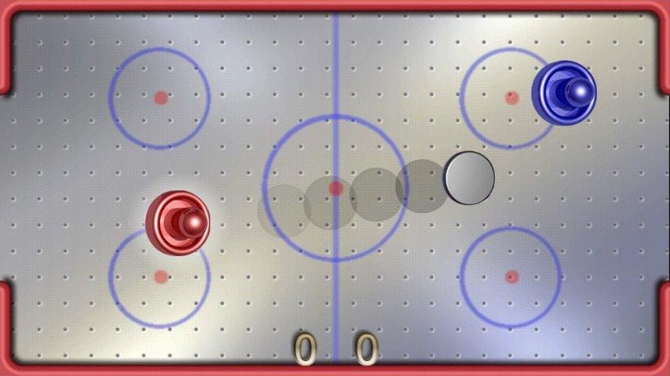

Assignment Revisions and Corrections will be noted here.
The purpose of this assignment is to give you practice building a real-time collaborative app based on web sockets and specifically npm's socket.io module (as used in tutorial 05). Since this is meant to be a an app that allows people working in different browsers to collaborate you might take advantage of the fact that we can host servers on the Open Stack virtual machines that can be reached by other machines.
In this assignment you are going build a single page client-server app based primarily on native capabilties of Node.js, however this time you will use the npm module socket.io to implement asynchronous real-time data exchange between client and server. You are also free to import (or more correctly "require") other simple npm modules from the npm (node package manager) registry. However, the use of Express.js and similar "high level" frameworks is still not allowed for this assignment. This is still primarily a javascript programming exercise and we still want you to build an app based primarily on node.js built in capabilities with a few helper modules.
The requirement is to build a real-time collaborative "game" based on "Air Hockey" or "Pong". The main feature is that the players will be on different browsers, ideally on different machines. The challenge will be to decide what data is communicated between clients and server and where the important decisions, like collisions, are made. The goal is for the displays within the separate browsers to look a synchronized as possible.
The components are:
Server build with just Node.js and its build in modules (e.g. http, path, fs, url), and that makes use of the npm socket.io module. You MAY NOT use express.js. If you have any doubts about whether you can require a certain npm module please check with me ahead of time.
Client: browser which is provided with a web page from the server consisting of html, css, javascript and jquery. (You can use which ever of these your want.) After what you discovered in tutorial 04 you can strip out all jQuery if you want -the choice is yours.
Assignment Restrictions:
Technology Restrictions: Because each layer of node.js/javascipt-based technologies, like npm modules or the express.js framework, solves many problem you encounter, in this assignment we will not allow their use yet. In later assignments we will bring these in and focus on new challenges. So pay attention to the technology restrictions in the various assignments in the course.
Assignments can be done in pairs: If you want to work with a partner you can. Please only submit one copy to culearn with both your names on it. (In the past we have had pairs who each thought the other member would submit and so nothing was submitted. Both will get a zero if this happens.)
Marking: This assignment is based on 15 design requirements numbered R1.1...R4.2 for a total of 30 marks.
Marks are awarded, or deducted, based on requirements as follows:
| R0.x | The assignment gets 0 marks if any submission requirement, shown in red, is not met. |
| R0.x | 5 marks are deducted from assignment score for each good practice requirement, shown in yellow, not met. |
| Rx.x | We will award 2 marks for each design requirement that is met and well implemented, 1 mark for those only partly met or met but poorly implemented, and 0 marks for any not met. |
The following requirements pertain to all your assignments regardless of what your application is supposed to do (i.e. regardless of the design requirements). These requirements are to ensure that your code is usable, readable, and maintainable.
R0.0 UNIQUENESS REQUIREMENT. The solution and code you submit MUST be unique. That is, it cannot be a copy of, or be too similar to, someone else's code, or other code found elsewhere. You are, however, free to use any code posted on our course web site as part of our assignment solution. [Assigment mark =0 if this requirement is not met.]
R0.1 CODE SUBMISSION ORGANIZATION AND COMPILATION: You should submit all the code files and data files necessary to compile and run your app. The TA's will execute your app with node app.js. unless alternative instructions are provided in a README.txt file. If you compress your code when submitting to culearn you must use only .zip format (not .rar or .tar or whatever). Though you are permitted to write code on Windows, Linux, or Mac OS the code should be generic enough to be OS agnostic. Your code must work with at least a current Chrome browser. [Assigment mark =0 if this requirement is not met.]
R0.2 README FILE: Your submission must include a README.txt file telling the TA how to setup and run your app. The TA should not have to look into your code to figure out how to start up your app. Your README.txt must contain the following:
Version: node.js version number and OS your code was tested on.
Install: how to install needed code. This will likely look like npm install or npm install module_name(The preference is for npm install which uses a package.json configuration file that lists all the required modules.)
Launch: Instructions on how to launch your app. e.g. node myserver.js. As the course progresses there will be more launch options to it's important to provide instructions.
Testing: Instructions on what the TA should do to run your app. e.g. visit http://localhost:3000/mytest.html?name=Louis. If your app requires a userid/password to run then provide one for the TA to use.
Pay attention to any specific URL's that must be supported by your app. [Assigment mark =0 if this requirement is not met.]
R0.3 VARIABLE AND FUNCTION NAMES: All of your variables and functions should have meaningful names that reflect their purpose. Don't follow the convention common in math courses where they say things like: "let x be the number of customers and let y be the number of products...". Instead call your variables numberOfCustomers or numberOfProducts. Your program should not have any variables called "x" unless there is a good reason for them to be called "x". (One exception: It's OK to call simple for-loop counters i,j and k etc. when the context is clear and VERY localized.) Remember javascript does not have typed variables or functions so choosing good names is even more important. Many functions in javascript are annonymous (have no name) and so the name of the variable that refers to them is even more important. [Minus 5 marks from assignment if this requirement is not met.]
R0.4 COMMENTS: Comments in your code must coincide with what the code actually does. It is a very common bug in industry for people to modify code and forget to modify the comments and so you end up with comments that say one thing and code that actually does another. By the way, try not to over-comment your code but instead choose good variable names and function names that make the code more "self commenting". [Minus 5 marks from assignment if this requirement is not met.]
R0.5 CITATION REQUIREMENT: If you use code from other sources you should cite the source in comments that appear with the code. If the source is an internet website then put the URL in the comments. You may use code from outside sources but this may not form the complete solution you are handing in. [Minus 5 marks from assignment if this requirement is not met.]
VERY IMPORTANT: Any sample code fragments provided may have bugs (although none are put there intentionally). You must be prepared to find errors in the requirements and sample code. Please report errors so they can be fixed and an assignment revision noted.
For this assignment we want you to come up with a small app that allows real-time collaboration between, or among, more than one browser client at the same time running on different machines. You will build your interpretation of the classic "Air Hockey" game:

You will notice the similarity with the tutorial 05 code. You can use that code if you want or abandon it completely. The main design challenges will be to decide what gets communicated between client and server and who decides where thing like the puck are and where collision decisions are made.
For this application two users with separate browsers are players but other browsers can be spectators viewing the game being played. So there can be more than two browsers involved. The two players would each have control of one "paddle". The air hockey puck would presumably bounce off the walls and the players would be trying to knock the puck with their paddle to score points. Scoring could be based on a goal area or simply hitting the back wall behind the player.
Demo Code: We will be posting an example of a polling-based collaborative app (Asynchronous Collaboration based on Polling) and ans examples based on sockets (Basic Chat Collaboration with WebSockets) in the course notes. Much of the socket interaction can be based on the work done in tutorial 05.
R1.1 The server code should use only javascript and node.js and use npm the npm socket.io module. Other simple modules could be allowed but discuss your intended use of them with the professor ahead of time.
R1.2 The real-time collaboration between client and server should be based on sockets and in particular use the npm socket.io module.
R1.3 The server-side and client-side javascript should keep track of who has permission control a paddle. Only two players (browsers) should be able to control a paddle each. Other browers should only be allowed to spectate and see the game happening in real-time. The server should ignore attempts made by spectators to control a paddle. (Note this app can be done entirely in the main memory of the server. This assignment does not require that you read and write any files (except to deliver the app) or use a database.)
R1.4 Server should be hosted on port 3000. The initial launch of the web app should be the result of the client making a request to http://localhost:3000/assignment3.html.
R2.1 The data exchanged between client and server should be in the form of JSON object strings. (The initial launch of the client web page will just be the result of a GET request for a static application .html file and other supporting files.)
R3.1 When the app first launches the client should see the game layout of the app (playing surface). The player should not initially be able to move anything in the app environment until they are granted control of the a paddle. The visual appearance of a paddle should change depending on whether anyone is currently controlling it or not. For example, once a player has control of a paddle their name might appear on it or it might become a designated colour.
R3.2 To be allowed to control item a paddle a user must register, or sign in, or request control of it. This could be done by the user typing their name in a text box and submitting the request to the server. The server would them allow them to be a controlling player if one of paddles is free.
R3.3 Once a player has control of a paddle they should be able to move it with key strokes on the keyboard (as was done for the blue box in the canvasWithTimer.js demo code from the tutorials.
R3.4The app should show the motion of the two paddles and the motion of the puck on all browsers watching and the images should be synchronized as much as possible. The dynamics should look the same on all the browsers watching.
R3.5 The players should be able to hit the puck with the paddles and have the puck respond realistically to the collision. The puck should bounce of the walls of the playing surface in a realistic way. The paddles can be rectangles if you want but the puck should be circular. The collisions should appear synchronized in all the browsers watching. You will have to decide where collision decisions are made (server, one browser, two browsers, etc.).
R3.6 A client should be able to relinquish control of a paddle and thereby allow some other browser to become a player, rather than spectator. The appearance of the paddle should make it clear when they are available vs. taken.
R3.7 The motion should be smooth convincing and synchronized. Synchronized means that the motion should appear the same in different browser windows. The challenge is to make the collisions appear the same in all browser windows. You should be mindful of what data is being passed back and forth. If you intend to pass your whole representation of the world around whenever anything happens that will generate a lot of data traffic. On the other hand, passing around only what is needed might smooth things out a lot.
R3.8 The layout labelling should make it obvious what an intended player is supposed to do. When the TA opens your game for evaluation it should be obvious how to get control of a paddle and start playing. Similarly if they want to give up controling a paddle and let someone else play.
R4.1 Add at least some enhancement to the basic requirements above. For example implement the notion of scoring (how points are calculated and awarded). Perhaps have a scoreboard on display.
R4.2 Your enhancement should be visible and obvious to the evaluator. They should not have to read documentation or code to figure out what it is (though you should mention what it is in your README.txt file submitted with the assignment.